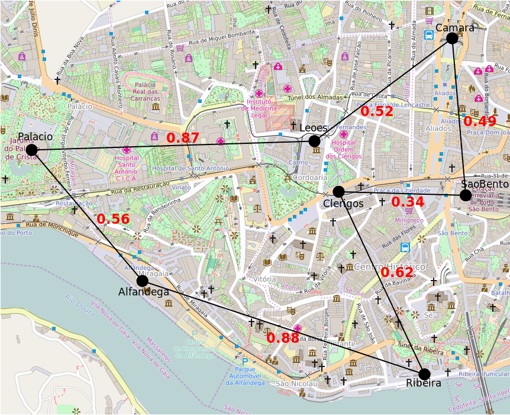
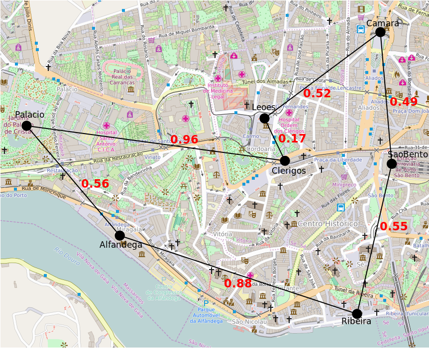
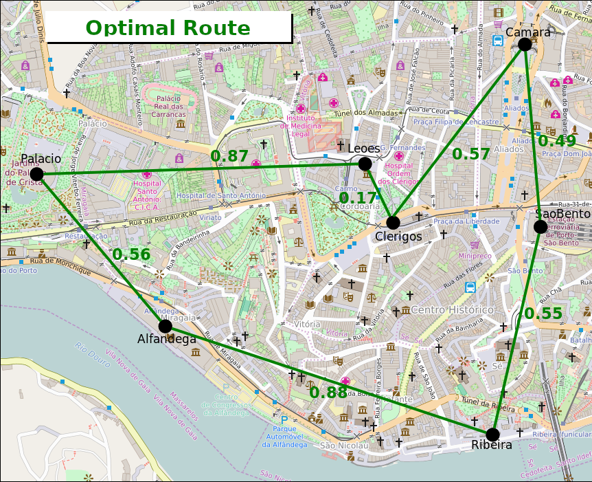

In what concerns the continuous evaluation solving exercises grade during the semester, you should submit until 23:59 of April 14th
(this exercise will still be available for submission after that deadline, but without couting towards your grade)
[to understand the context of this problem, you should read the class #06 exercise sheet]
In this problem you should submit a complete program with the main function, reading with functions such as scanf and printing with functions such as printf.
Monica and Chandler are on a romantic getaway in Porto, and as expected, Monica has planned everything down to the last detail. She has a list of must-visit tourist spots, and she wants to make sure they take the most efficient route—because wasting time means less sightseeing and fewer perfect moments.
Chandler, of course, just wants to relax, but Monica is determined to optimize their trip. They will start at S. Bento train station and then she wants to pass through all places once and return back to S. Bento. Monica wants the shortest possible route and needs your help. She has made a table with the distances between all the places she will visit:
| SaoBento | Camara | Clerigos | Ribeira | Alfandega | Palacio | Leoes | |
|---|---|---|---|---|---|---|---|
| SaoBento | ------- | 0.49 | 0.34 | 0.55 | 0.95 | 1.30 | 0.45 |
| Camara | 0.49 | ------- | 0.57 | 1.03 | 1.17 | 1.33 | 0.52 |
| Clerigos | 0.34 | 0.57 | ------- | 0.62 | 0.64 | 0.96 | 0.17 |
| Ribeira | 0.55 | 1.03 | 0.62 | ------- | 0.88 | 1.41 | 0.79 |
| Alfandega | 0.95 | 1.17 | 0.64 | 0.88 | ------- | 0.56 | 0.64 |
| Palacio | 1.30 | 1.33 | 0.96 | 1.41 | 0.56 | ------- | 0.87 |
| Leoes | 0.45 | 0.52 | 0.17 | 0.79 | 0.64 | 0.87 | ------- |
Monica can choose can choose to go to the various locations in any order. Obviously, the order she chooses strongly influences the length of the route. The following figures illustrate two possible routes and their length:
|  |  | |
| Total: 4.28km = 0.34+0.62+0.88+0.56+0.87+0.52+0.49 | Total: 4.13km = 0.55+0.88+0.56+0.96+0.17+0.52+0.49 |
Although they look like good routes, none of the images above represent an optimal route. In fact, Monica can walk only 4.09km if she takes the route in the next image:
|  |
| Total: 4.09km = 0.55+0.88+0.56+0.87+0.17+0.57+0.49 |
You need to help Monica choose the perfect path, not only for this Porto trip, but for any other trip with Chandler!
Given a set of locations and the distance between them, you have to find out the length of the shortest route that passes through all the points and returns to the starting location at the end.
The first line contains a positive integer N, the number of locations to consider.
On the second line there are N words indicating the location names (each name only contains letters and has a maximum length of 30 characters). The first location will be the starting place.
The next N lines, each one with N real numbers, indicate the distance matrix between the locations. The j-th column of the i-th line represents the distance between location i and j (see the example to understand better). The distance matrix is guaranteed to be symmetric, that is, distance(i,j) = distance(j,i).
The output consists of a line containing a single number indicating the length of the shortest path that passes through all the locations and returns to the starting location, as described above. This number must be rounded to two decimal places.
The following limits are guaranteed in all the test cases that will be given to your program:
| 3 ≤ N ≤ 10 | Number of locations |
| Example Input | Example Output |
7 SaoBento Camara Clerigos Ribeira Alfandega Palacio Leoes 0.00 0.49 0.34 0.55 0.95 1.30 0.45 0.49 0.00 0.57 1.03 1.17 1.33 0.52 0.34 0.57 0.00 0.62 0.64 0.96 0.17 0.55 1.03 0.62 0.00 0.88 1.41 0.79 0.95 1.17 0.64 0.88 0.00 0.56 0.64 1.30 1.33 0.96 1.41 0.56 0.00 0.87 0.45 0.52 0.17 0.79 0.64 0.87 0.00 |
4.09 |